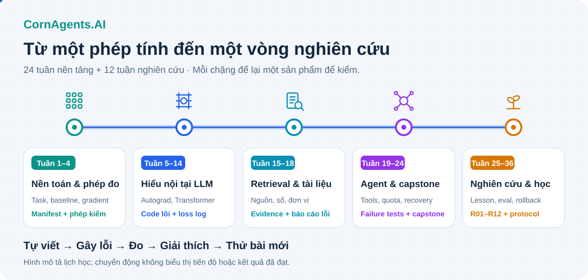
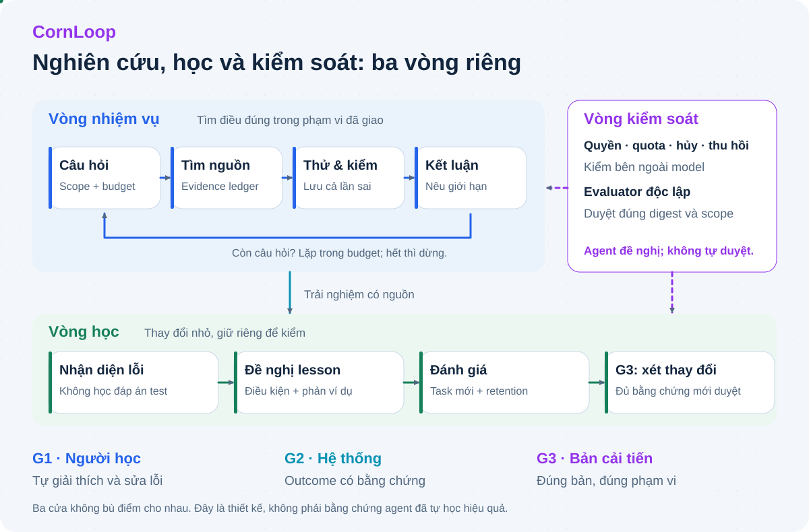
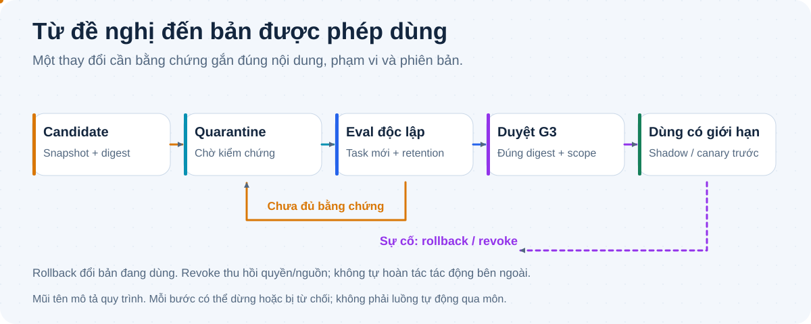

CornAgents.AI
Hiểu đường học. Nhìn rõ vòng kiểm.
Từ code lõi đến nghiên cứu có bằng chứng. Các tuyến chuyển động chỉ minh họa luồng; chưa thể hiện kết quả học hoặc hiệu năng agent.
Đọc README · Vào bài học


Từ code lõi đến nghiên cứu có bằng chứng. Các tuyến chuyển động chỉ minh họa luồng; chưa thể hiện kết quả học hoặc hiệu năng agent.
Đọc README · Vào bài học

